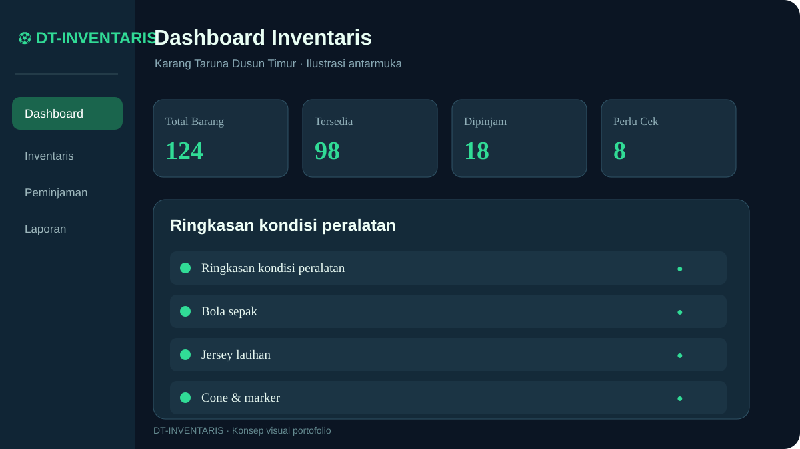

Inventaris sepak bola, lebih tertata.
DT-INVENTARIS adalah aplikasi pengelolaan peralatan sepak bola untuk Karang Taruna Dusun Timur. Pantau stok, peminjaman, pengembalian, dan laporan dalam satu antarmuka.

Solusi sederhana untuk inventaris komunitas.
Pencatatan peralatan secara manual dapat menyulitkan pengurus ketika ingin mengetahui jumlah stok, kondisi barang, atau siapa yang sedang meminjam perlengkapan. DT-INVENTARIS menghadirkan alur pengelolaan yang lebih terstruktur melalui aplikasi web responsif.
Proyek ini dikembangkan sebagai demonstrasi kemampuan Front-End Development. Penyimpanan menggunakan LocalStorage di perangkat pengguna, sehingga tidak memerlukan server aplikasi maupun akun pengguna.
Semua kebutuhan dalam satu dashboard.
Dari pencatatan hingga pelaporan.
Input Barang
Catat nama, kategori, jumlah, dan kondisi peralatan.
Pinjam
Masukkan peminjam, barang, jumlah, dan tanggal.
Kembalikan
Perbarui status transaksi dan ketersediaan stok.
Laporan
Tinjau riwayat dan buat rekap inventaris.
Pratinjau desain aplikasi.
Ilustrasi UI, bukan tangkapan layar aplikasi.
Teknologi yang digunakan.
Struktur semantik dan tampilan kustom.
Grid responsif dan komponen UI.
Interaksi, logika transaksi, dan validasi.
Penyimpanan data lokal pada browser.
Visualisasi statistik inventaris.
Backup, pemulihan, dan ekspor data.
Membangun alur yang konsisten.
📦 Akurasi ketersediaan stok
Jumlah barang yang dipinjam perlu diperhitungkan agar stok tersedia tidak keliru. Pendekatan: pisahkan jumlah total dan jumlah dalam peminjaman aktif.
🔄 Riwayat transaksi
Perubahan status peminjaman perlu dapat ditelusuri. Pendekatan: simpan data transaksi terpisah dari master inventaris.
💾 Risiko data lokal
LocalStorage dapat hilang ketika data browser dibersihkan. Pendekatan: sediakan backup dan restore melalui file JSON.
📱 Penggunaan melalui HP
Pengurus perlu mengakses data melalui layar kecil. Pendekatan: layout responsif dan navigasi yang mudah digunakan.
Siap melihat DT-INVENTARIS?
Jelajahi alur inventaris dan peminjaman melalui demo aplikasi.